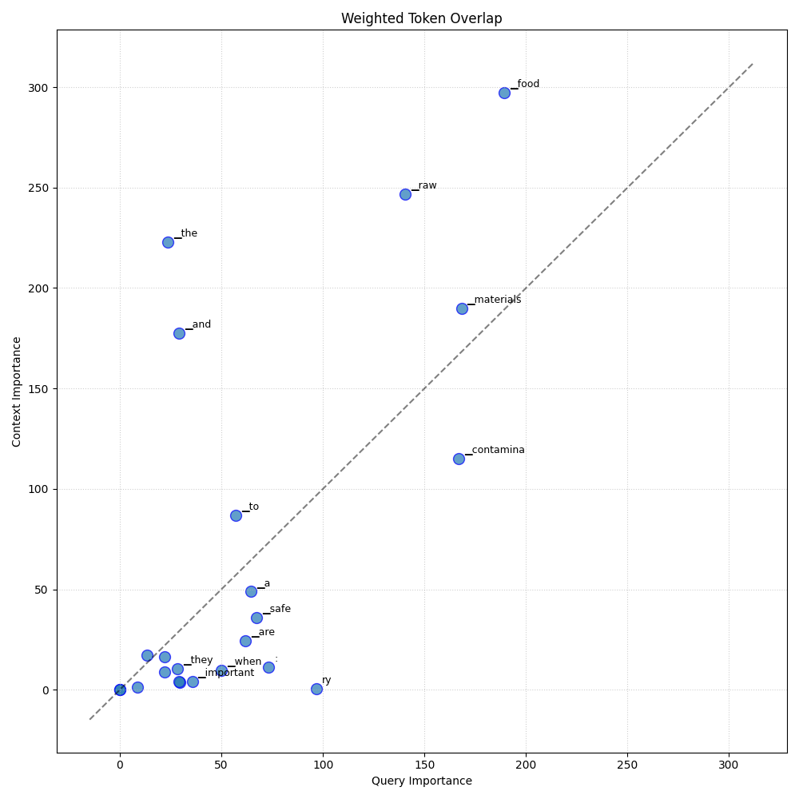

Analysis: query_34
Query: ▁que ry : ▁What ▁are ▁the ▁important ▁steps ▁to ▁make ▁sure ▁raw ▁materials ▁are ▁safe ▁and ▁not ▁contamina ted ▁when ▁they ▁come ▁into ▁a ▁food ▁business ?
Document Relevance

Weighted Overlap

Token Comparison

Documents
Document 1 (Click to Expand)
▁In ▁addition ▁to ▁high - quality ▁products , ▁each ▁production ▁line ▁should ▁be ▁equip ped ▁with ▁a ▁metal ▁detect or ▁to ▁prevent ▁metalli c ▁foreign ▁matter ▁from ▁being ▁mix ed ▁into ▁the ▁food , ▁and ▁its ▁function ▁should ▁be ▁maintain ed ▁at ▁any ▁time . ▁ 0.8 mm ▁Iron ▁metal ▁and ▁1.0 mm ▁Fine ▁metal ▁pieces ▁or ▁metal ▁need les ▁above ▁non - fer rou s ▁metal s . ▁6. ▁Pay ▁attention ▁to ▁the ▁following ▁when ▁making ▁ready - to - e at ▁meal s ▁(1) ▁Cross - conta mination ▁of ▁raw ▁and ▁cook ed ▁food ▁should ▁be ▁avoid ed . ▁Raw ▁and ▁cook ed ▁food ▁should ▁not ▁be ▁used ▁on ▁the ▁same ▁work ben ch ▁or ▁on ▁the ▁same ▁machine ▁or ▁at ▁the ▁same ▁time . ▁After ▁touch ing ▁raw ▁food , ▁the ▁same ▁staff ▁must ▁was h ▁and ▁dis infect ▁hands ▁and ▁change ▁work ▁clothes ▁before ▁handling ▁cook ed ▁food . ▁(2) ▁All ▁kind s ▁of ▁process ed ▁and ▁condition ed ▁semi - fini shed ▁products ▁should ▁be ▁package d ▁within ▁the ▁short est ▁storage ▁time ▁and ▁clearly ▁marked ▁with ▁After ▁the ▁expira tion ▁date ▁( ex cept ▁for ▁the ▁soup ▁barre ls ▁of ▁group ▁meal ▁products ▁that ▁are ▁not ▁marked ), ▁transport ▁and ▁deliver ▁to ▁consumer s ▁as ▁soon ▁as ▁possible . ▁(6) ▁Quality ▁control ▁* ▁The ▁quality ▁control ▁department ▁should ▁be ▁separate d ▁from ▁the ▁manufacturing ▁and ▁sales ▁department s . ▁* ▁Ap propria te ▁quality ▁control ▁operating ▁standard s ▁should ▁be ▁established ▁and ▁implement ed . ▁The ▁content ▁should ▁include ▁the ▁quality ▁specifica tions ▁and ▁accept ance ▁standard s ▁of ▁raw ▁materials , ▁materials , ▁semi - fini shed ▁products , ▁finished ▁products ▁or ▁packaging ▁materials , ▁control ▁points ▁in ▁the ▁process ing ▁process , ▁control ▁standard s , ▁management ▁of ▁food ▁addit ives , ▁Ware hou sing ▁management ▁and ▁transport ation ▁and ▁distribution ▁management , ▁etc . , ▁and ▁the ▁manufacturing ▁process ▁and ▁quality ▁control ▁operation s ▁need ▁to ▁be ▁trace able ▁and ▁trace able ▁to ▁ensure ▁product ▁quality . ▁* ▁The ▁factor y ▁should ▁establish ▁a ▁supplier ▁evaluation ▁system . ▁All ▁food ▁raw ▁materials ▁and ▁materials ▁should ▁pass ▁the ▁quality ▁control ▁inspect ion ▁before ▁they ▁can ▁be ▁used ▁in ▁the ▁factor y , ▁but ▁they ▁can ▁be ▁replace d ▁by ▁the ▁supplier ’ s ▁certificate ▁or ▁guarantee ; ▁those ▁who ▁fail ▁to ▁pass ▁the ▁accept ance ▁should ▁be ▁clearly ▁marked ▁and ▁handle d ▁appropriate ly ▁Avo id ▁mis use . ▁* ▁The ▁raw ▁materials ▁and ▁materials ▁used ▁should ▁comp ly ▁with ▁relevant ▁sanitar y ▁standard s ▁or ▁regulations , ▁and ▁the ▁relevant ▁information ▁of ▁the ▁source ▁management , ▁including ▁the ▁source ▁of ▁the ▁raw ▁materials ▁and ▁the ▁quanti ty , ▁etc . , ▁should ▁be ▁clear , ▁and ▁be ▁trace able ▁and ▁trace able . ▁When ▁the ▁raw ▁materials ▁are ▁likely ▁to ▁be ▁contamina ted ▁or ▁residu es ▁by ▁ pesticid es , ▁animal ▁drugs , ▁heavy ▁metal s ▁or ▁other ▁toxin s , ▁they ▁shall ▁be ▁confirm ed ▁that ▁their ▁safety ▁is ▁in ▁compliance ▁with ▁relevant ▁laws ▁and ▁regulations ▁before ▁they ▁can ▁be ▁used . ▁The ▁safety ▁confirmation ▁shall ▁be ▁replace d ▁by ▁the ▁certification ▁documents ▁provided ▁by ▁the ▁supplier . ▁Regula r ▁delivery ▁inspect ion ▁mechanism . ▁* ▁The ▁food ▁packaging ▁container ▁supplier ▁shall ▁be ▁required ▁to ▁provide ▁or ▁att ach ▁a ▁safety ▁certificate ▁of ▁the ▁packaging ▁material .
Document 2 (Click to Expand)
▁4. ▁The ▁factor y ▁should ▁establish ▁and ▁implement ▁a ▁raw ▁material ▁supplier ▁evaluation ▁system ; ▁raw ▁materials ▁and ▁materials ▁can ▁only ▁be ▁used ▁in ▁the ▁factor y ▁after ▁pas sing ▁the ▁quality ▁control ▁inspect ion , ▁or ▁they ▁can ▁be ▁replace d ▁by ▁the ▁supplier ’ s ▁inspect ion ▁certificate ; ▁the ▁finished ▁product ▁should ▁under go ▁strict ▁quality ▁inspect ion ▁confirmation ▁and ▁product ▁temperature ▁Shi p ment ▁can ▁only ▁be ▁made ▁after ▁pas sing ▁the ▁test . ▁The ▁princip le ▁of ▁first - in ▁first - out ▁shall ▁be ▁used ▁for ▁ship ment , ▁and ▁the ▁shipping ▁vehicle ▁shall ▁be ▁inspect ed ▁to ▁avoid ▁contamina tion ▁of ▁the ▁good s . ▁5. ▁The ▁inspect ion ▁and ▁accept ance ▁operating ▁standard s ▁for ▁raw ▁materials ▁and ▁materials ▁and ▁equipment ▁should ▁be ▁established . ▁The ▁content ▁should ▁include ▁the ▁quality ▁specifica tions ▁of ▁raw ▁materials ▁and ▁materials ▁and ▁equipment , ▁the ▁specifica tions ▁and ▁standard s ▁of ▁cleaning ▁and ▁dis infect ion ▁products , ▁the ▁applica bility ▁evaluation ▁system ▁of ▁equipment , ▁the ▁sa mp ling ▁plan ▁of ▁raw ▁materials , ▁and ▁the ▁temperature ▁management ▁of ▁raw ▁materials . ▁System ▁and ▁procedure s ▁for ▁handling ▁non - con form ing ▁products , ▁etc . ▁(1) ▁The ▁raw ▁materials ▁and ▁materials ▁used ▁should ▁comp ly ▁with ▁the ▁relevant ▁food ▁hygien e ▁standard s ▁and ▁regulations , ▁and ▁the ▁relevant ▁information ▁of ▁the ▁source ▁management , ▁including ▁the ▁source ▁of ▁the ▁raw ▁materials ▁and ▁the ▁quanti ty , ▁etc . , ▁should ▁be ▁clear ▁and ▁trace able ▁and ▁trace able . ▁The ▁main ▁raw ▁materials ▁and ▁ingredients ▁should ▁be ▁test ed ▁according ▁to ▁the ▁sa mp ling ▁plan ▁and ▁confirm ed ▁to ▁meet ▁the ▁quality ▁specifica tions ▁in ▁the ▁factor y . ▁The ▁supplier ▁can ▁also ▁provide ▁an ▁inspect ion ▁certificate ▁instead . ▁The ▁inspect ion ▁items ▁should ▁include ▁the ▁type ▁and ▁content ▁of ▁possible ▁path ogen s . ▁Raw ▁materials ▁and ▁materials ▁that ▁fail ▁to ▁pass ▁the ▁accept ance ▁shall ▁be ▁clearly ▁marked ▁and ▁handle d ▁appropriate ly ▁to ▁avoid ▁mis use . ▁(2) ▁The ▁supplier ▁shall ▁provide ▁or ▁att ach ▁the ▁safety ▁information ▁of ▁chemical s ▁used ▁for ▁cleaning , ▁dis infect ion ▁and ▁other ▁purpose s ▁and ▁their ▁concentration ▁det ection ▁methods ▁Or ▁test ▁paper . ▁(3) ▁The ▁food ▁packaging ▁container ▁supplier ▁shall ▁be ▁required ▁to ▁provide ▁or ▁att ach ▁a ▁safety ▁certificate ▁of ▁the ▁packaging ▁material . ▁(4) ▁The ▁equipment ▁supplier ▁shall ▁provide ▁its ▁equipment ▁operating ▁standard s ▁and ▁cleaning ▁and ▁maintenance ▁instructions . ▁(5) ▁Food ▁addit ives ▁supplier s ▁should ▁att ach ▁the ▁registration ▁number ▁approved ▁by ▁the ▁Ministry ▁of ▁Health ▁and ▁Wel fare . ▁Comp o und ▁food ▁addit ives ▁should ▁provide ▁their ▁complete ▁ingredients ▁and ▁correct ▁storage , ▁addition ▁limit s ▁and ▁usage ▁methods ; ▁related ▁items ▁should ▁also ▁be ▁provided ▁for ▁items ▁that ▁are ▁likely ▁to ▁be ▁contamina ted ▁by ▁micro organ ism s . ▁Test ▁results ▁of ▁micro organ ism s ▁or ▁path ogen s . ▁6. ▁When ▁raw ▁materials ▁are ▁likely ▁to ▁be ▁po llu ted ▁or ▁left ▁with ▁ pesticid es , ▁animal ▁drugs , ▁heavy ▁metal s ▁or ▁other ▁toxin s , ▁there ▁should ▁be ▁a ▁regular ▁inspect ion ▁mechanism ▁To ▁confirm ▁that ▁its ▁safety ▁or ▁content ▁comp lies ▁with ▁relevant ▁laws ▁and ▁regulations . ▁7. ▁The ▁storage ▁life ▁test ▁of ▁refrigera ted ▁food ▁should ▁be ▁established ▁to ▁ensure ▁the ▁good ▁quality ▁of ▁the ▁product ▁during ▁the ▁refrigera tion ▁period .
Document 3 (Click to Expand)
▁establish ment ▁should ▁not ▁accept ▁any ▁feed stock ▁contain ing ▁parasites , ▁micro - organ ism s ▁or ▁ toxic ▁substance s , ▁de com posed ▁or ▁foreign , ▁which ▁can ▁not ▁be ▁reduce d ▁to ▁levels ▁the ▁normal ▁process es ▁of ▁classifica tion , ▁preparation ▁or ▁manufacture . ▁The ▁technical ▁leader ▁must ▁have ▁the ▁identity ▁and ▁quality ▁standard s ▁of ▁the ▁feed stock ▁or ▁input s ▁so ▁as ▁to ▁be ▁able ▁to ▁control ▁the ▁contamina nts ▁that ▁can ▁be ▁reduce d ▁to ▁acceptable ▁levels ▁by ▁normal ▁grad ing ▁and ▁/ ▁or ▁preparation ▁or ▁manufacturing ▁process es . ▁* ▁The ▁quality ▁control ▁of ▁the ▁feed stock ▁or ▁input ▁should ▁include ▁their ▁inspect ion , ▁classifica tion ▁and ▁if ▁necessary ▁laborator y ▁analysis ▁before ▁being ▁taken ▁to ▁the ▁manufacturing ▁line . ▁Only ▁use ▁raw ▁material ▁or ▁input s ▁in ▁good ▁condition . ▁* ▁At ▁raw ▁material ▁and ▁the ▁ingredients ▁store d ▁in ▁the ▁establish ment ' s ▁areas ▁should ▁be ▁kept ▁in ▁such ▁a ▁condition ▁as ▁to ▁prevent ▁deteriora tion , ▁protect ▁against ▁contamina tion ▁and ▁reduce ▁damage ▁to ▁the ▁least ▁possible ▁extent . ▁It ▁should ▁be ▁ensure , ▁through ▁the ▁s ▁the ▁adequat e ▁ro tation ▁of ▁raw ▁material ▁and ▁ingredients . ▁ 8.2 . ▁Pre vention ▁of ▁cross - conta mination : ▁* ▁Effective ▁measure s ▁should ▁be ▁taken ▁to ▁prevent ▁contamina tion ▁of ▁food ▁material ▁by ▁direct ▁or ▁indirect ▁contact ▁with ▁contamina ted ▁material ▁in ▁the ▁early ▁stage s ▁of ▁the ▁process . ▁* ▁The ▁people ▁who ▁manipula te ▁raw ▁material ▁or ▁semi ▁products with ▁the ▁risk ▁of ▁contamina ting ▁the ▁final ▁product ▁should ▁not ▁come ▁into ▁contact ▁with ▁any ▁final ▁product ▁until ▁they ▁have ▁removed ▁all ▁clothing ▁protection ▁that ▁was ▁used ▁during ▁the ▁handling ▁of ▁raw ▁material ▁semi - process ed ▁products ▁with ▁which ▁they ▁have ▁come ▁into ▁contact ▁or ▁have ▁been ▁contamina ted ▁by ▁feed stock ▁or ▁semi - process ed ▁products ▁and , ▁other ▁protect ive ▁clothing ▁clean ed ▁and ▁comp lied ▁with ▁items ▁7.5 ▁and ▁7 .6. ▁* ▁If ▁contamina tion ▁is ▁possible , ▁hands ▁should ▁be ▁carefully ▁was hed ▁between ▁one ▁and ▁the ▁other ▁handling ▁of ▁products ▁at ▁various ▁stage s ▁of ▁the ▁process . ▁* ▁All ▁equipment ▁and ▁uten s ils ▁that ▁have ▁come ▁into ▁contact ▁with ▁raw ▁material ▁or ▁contamina ted ▁material ▁should ▁be ▁thorough ly ▁clean ed ▁and ▁dis infect ed ▁before ▁being ▁used ▁to ▁contact ▁with ▁finished ▁products . ▁* ▁Water ▁use : ▁* ▁As ▁a ▁general ▁princip le ▁in ▁food ▁handling ▁only ▁drink ing ▁water ▁should ▁be ▁used . ▁* ▁Non - po table ▁water ▁may ▁be ▁used ▁for ▁the ▁production ▁of ▁ste am , ▁cool ing ▁system , ▁fire ▁control ▁and ▁other ▁similar ▁purpose s ▁not ▁related ▁to ▁food , ▁with ▁the ▁appro val ▁of ▁the ▁ competent ▁body .
Document 4 (Click to Expand)
▁* ▁A ▁food ▁trace ability ▁and ▁track ing ▁system ▁should ▁be ▁established : ▁the ▁raw ▁materials ▁used ▁should ▁comp ly ▁with ▁relevant ▁laws ▁and ▁regulations , ▁and ▁have ▁relevant ▁data ▁or ▁records ▁that ▁can ▁be ▁trace d ▁back ▁to ▁the ▁source ▁( for ▁example : ▁raw ▁material ▁supplier , ▁purchase ▁date , ▁transaction ▁rece ip t , ▁importe d ▁food ▁and ▁related ▁product ▁import ▁permission ▁notice ▁And ▁other ▁information ), ▁and ▁link ▁this ▁data ▁to ▁the ▁product ▁process ing ▁operation ▁record . ▁The ▁relevant ▁records ▁of ▁accept ance , ▁production ▁and ▁ship ment ▁should ▁be ▁kept ▁for ▁at ▁least ▁5 ▁years . ▁* ▁Care ful ▁selection ▁of ▁good ▁supplier s , ▁it ▁is ▁recommended ▁to ▁establish ▁a ▁" raw ▁material ▁supplier ▁purchase ▁contract " ▁to ▁ensure ▁that ▁the ▁raw ▁material ▁meet s ▁the ▁requirements . ▁(2) ▁Storage ▁of ▁raw ▁materials , ▁semi - fini shed ▁products ▁and ▁finished ▁products ▁* ▁During ▁storage , ▁it ▁should ▁be ▁prevent ed ▁from ▁being ▁affected ▁by ▁temperature ▁and ▁humid ity ▁flu ctu ations ▁to ▁avoid ▁deteriora tion ▁or ▁ corrupt ion . ▁* ▁The ▁store d ▁raw ▁materials , ▁semi - fini shed ▁products ▁and ▁finished ▁products ▁should ▁be ▁covered ▁or ▁package d ▁and ▁placed ▁off ▁the ▁ground . ▁It ▁is ▁recommended ▁to ▁be ▁placed ▁on ▁pa llet s ▁made ▁of ▁materials ▁that ▁are ▁not ▁easily ▁contamina ted ▁( s uch ▁as ▁sta in less ▁steel ▁ra cks ▁or ▁plastic ▁plates ). ▁* ▁If ▁the ▁store d ▁raw ▁materials , ▁semi - fini shed ▁products , ▁and ▁finished ▁products ▁are ▁sub - pack a ged , ▁the ▁date ▁of ▁sub - pack age ▁and ▁exp i ry ▁date ▁must ▁be ▁added , ▁or ▁other ▁mark s ▁that ▁can ▁identify ▁the ▁effective ▁date . ▁* ▁It ▁should ▁comp ly ▁with ▁the ▁first - in , ▁first - out ▁princip le , ▁and ▁record ▁it . ▁* ▁Food ▁addit ives ▁must ▁be ▁store d ▁in ▁a ▁special ▁area , ▁managed ▁by ▁a ▁special ▁person , ▁and ▁registered ▁in ▁a ▁special ▁book ▁the ▁type ▁of ▁use , ▁purchase ▁quanti ty , ▁use ▁amount ▁and ▁invent ory . ▁* ▁Aller gen ▁raw ▁materials ▁should ▁be ▁clearly ▁label ed , ▁store d ▁in ▁a ▁special ▁area , ▁or ▁separate d ▁by ▁other ▁means . ▁* ▁Item s ▁or ▁packaging ▁materials ▁that ▁may ▁contamina te ▁raw ▁materials , ▁semi - fini shed ▁products ▁or ▁finished ▁products ▁should ▁be ▁clearly ▁marked , ▁store d ▁in ▁special ▁areas , ▁or ▁separate d ▁by ▁other ▁means ▁to ▁prevent ▁cross - conta mination . ▁* ▁During ▁the ▁storage ▁process , ▁regular ▁inspect ions ▁should ▁be ▁made ▁and ▁accurate ▁records ▁should ▁be ▁made ; ▁when ▁there ▁are ▁ab normal ities , ▁they ▁should ▁be ▁de alt ▁with ▁immediately ▁to ▁ensure ▁quality ▁and ▁hygien e . ▁(3) ▁We igh ing ▁and ▁blend ing ▁* ▁Before ▁use , ▁check ▁the ▁food ▁contact ▁surface ▁of ▁production ▁equipment ▁or ▁uten s ils ▁to ▁ensure ▁that ▁it ▁is ▁smooth ▁and ▁clean , ▁free ▁of ▁pit s , ▁crack s , ▁or ▁dir t , ▁and ▁avoid ▁contamina tion ▁or ▁foreign ▁matter .
Document 5 (Click to Expand)
▁* ▁A ▁food ▁trace ability ▁and ▁track ing ▁system ▁should ▁be ▁established : ▁the ▁raw ▁materials ▁used ▁should ▁comp ly ▁with ▁relevant ▁laws ▁and ▁regulations , ▁and ▁have ▁relevant ▁information ▁or ▁records ▁of ▁trace able ▁sources ▁( s uch ▁as : ▁raw ▁material ▁supplier s , ▁date ▁of ▁purchase , ▁transaction ▁documents , ▁importe d ▁food ▁and ▁related ▁product ▁import ▁permission ▁notice s ) ▁and ▁other ▁information ), ▁and ▁link ▁this ▁information ▁to ▁product ▁process ing ▁operation ▁records , ▁and ▁records ▁related ▁to ▁accept ance , ▁production ▁and ▁ship ment ▁should ▁be ▁kept ▁for ▁at ▁least ▁5 ▁years . ▁* ▁Care fully ▁select ▁high - quality ▁supplier s . ▁It ▁is ▁recommended ▁to ▁establish ▁a ▁" raw ▁material ▁supplier ▁purchase ▁contract " ▁to ▁ensure ▁that ▁raw ▁materials ▁meet ▁the ▁requirements . ▁( ▁2 ▁) ▁Storage ▁of ▁raw ▁materials , ▁semi - fini shed ▁products ▁and ▁finished ▁products ▁* ▁During ▁storage , ▁it ▁should ▁be ▁protected ▁from ▁temperature ▁and ▁humid ity ▁flu ctu ations ▁to ▁avoid ▁deteriora tion ▁or ▁ corrupt ion . ▁* ▁The ▁store d ▁raw ▁materials , ▁semi - fini shed ▁products ▁and ▁finished ▁products ▁should ▁be ▁covered ▁or ▁package d , ▁and ▁placed ▁away ▁from ▁the ▁ground . ▁It ▁is ▁recommended ▁to ▁place ▁them ▁on ▁pa llet s ▁made ▁of ▁materials ▁that ▁are ▁not ▁easily ▁po llu ted ▁( s uch ▁as ▁sta in less ▁steel ▁frame ▁or ▁plastic ▁plate ). ▁* ▁If ▁the ▁store d ▁raw ▁materials , ▁semi - fini shed ▁products , ▁and ▁finished ▁products ▁are ▁re pack a ged , ▁the ▁re pack ing ▁date ▁and ▁expira tion ▁date , ▁or ▁other ▁mark s ▁that ▁can ▁identify ▁the ▁expira tion ▁date ▁must ▁be ▁added . ▁* ▁The ▁princip le ▁of ▁first - in ▁first - out ▁shall ▁be ▁comp lied ▁with , ▁and ▁records ▁shall ▁be ▁made . ▁* ▁Food ▁addit ives ▁should ▁be ▁placed ▁in ▁a ▁special ▁area ▁fully ▁distinct ▁from ▁other ▁raw ▁materials , ▁semi - fini shed ▁products ▁or ▁finished ▁products , ▁and ▁a ▁special ▁person ▁should ▁be ▁design ated ▁to ▁manage ▁them , ▁and ▁the ▁product ▁name , ▁type , ▁and ▁license ▁of ▁food ▁addit ives ▁should ▁be ▁listed ▁in ▁a ▁paper ▁or ▁electronic ▁file ▁book ▁Trade ▁name ▁or ▁product ▁registration ▁code , ▁and ▁the ▁quanti ty ▁of ▁purchase , ▁delivery ▁and ▁invent ory , ▁4 ▁date . ▁* ▁Aller gen ▁raw ▁materials ▁should ▁be ▁clearly ▁marked , ▁store d ▁in ▁special ▁areas , ▁or ▁separate d ▁in ▁other ▁ways . ▁* ▁Article s ▁or ▁packaging ▁materials ▁that ▁may ▁contamina te ▁raw ▁materials , ▁semi - fini shed ▁products ▁or ▁finished ▁products ▁should ▁be ▁clearly ▁marked , ▁store d ▁in ▁special ▁areas , ▁or ▁separate d ▁in ▁other ▁ways ▁to ▁prevent ▁cross - conta mination . ▁* ▁During ▁the ▁storage ▁process , ▁it ▁should ▁be ▁check ed ▁regularly ▁and ▁record ed ; ▁if ▁there ▁is ▁any ▁ab normal ity , ▁it ▁should ▁be ▁de alt ▁with ▁immediately ▁to ▁ensure ▁the ▁quality ▁and ▁hygien e . ▁( ▁3 ▁) ▁B lending ▁and ▁marina ting ▁* ▁During ▁the ▁food ▁process ing ▁process , ▁effective ▁measure s ▁shall ▁be ▁taken ▁to ▁prevent ▁metal ▁or ▁other ▁sund ries ▁from ▁mix ing ▁into ▁the ▁food .
Document 6 (Click to Expand)
▁All ▁operation s ▁in ▁the ▁receiving , ▁inspect ing , ▁transport ing , ▁segrega ting , ▁prepar ing , ▁manufacturing , ▁packaging , ▁and ▁stor ing ▁of ▁food ▁shall ▁be ▁conduct ed ▁in ▁accordance ▁with ▁adequat e ▁sanit ation ▁princip les . ▁Ap propria te ▁quality ▁control ▁operation s ▁shall ▁be ▁ employed ▁to ▁ensure ▁that ▁food ▁is ▁suitable ▁for ▁human ▁consum p tion ▁and ▁that ▁food - pack aging ▁materials ▁are ▁safe ▁and ▁suitable . ▁Over all ▁sanit ation ▁of ▁the ▁plant ▁shall ▁be ▁under ▁the ▁super vision ▁of ▁one ▁or ▁more ▁ competent ▁individuals ▁assign ed ▁responsibility ▁for ▁this ▁function . ▁All ▁reasonable ▁precau tions ▁shall ▁be ▁taken ▁to ▁ensure ▁that ▁production ▁procedure s ▁do ▁not ▁contribute ▁contamina tion ▁from ▁any ▁source . ▁Chemi cal , ▁micro bi al , ▁or ▁extra ne ous - material ▁testing ▁procedure s ▁shall ▁be ▁used ▁where ▁necessary ▁to ▁identify ▁sanit ation ▁failure s ▁or ▁possible ▁food ▁contamina tion . ▁All ▁food ▁that ▁has ▁become ▁contamina ted ▁to ▁the ▁extent ▁that ▁it ▁is ▁adult er ated ▁within ▁the ▁meaning ▁of ▁the ▁act ▁shall ▁be ▁ reje cted , ▁or ▁if ▁permis sible , ▁treated ▁or ▁process ed ▁to ▁elimina te ▁the ▁contamina tion . ▁( a ) ▁Raw ▁materials ▁and ▁other ▁ingredients . ▁(1) ▁Raw ▁materials ▁and ▁other ▁ingredients ▁shall ▁be ▁inspect ed ▁and ▁segrega ted ▁or ▁otherwise ▁handle d ▁as ▁necessary ▁to ▁as certa in ▁that ▁they ▁are ▁clean ▁and ▁suitable ▁for ▁process ing ▁into ▁food ▁and ▁shall ▁be ▁store d ▁under ▁conditions ▁that ▁will ▁protect ▁against ▁contamina tion ▁and ▁min imize ▁deteriora tion . ▁Raw ▁materials ▁shall ▁be ▁was hed ▁or ▁clean ed ▁as ▁necessary ▁to ▁remove ▁so il ▁or ▁other ▁contamina tion . ▁Water ▁used ▁for ▁wa shing , ▁rin sing , ▁or ▁con ve ying ▁food ▁shall ▁be ▁safe ▁and ▁of ▁adequat e ▁sanitar y ▁quality . ▁Water ▁may ▁be ▁re used ▁for ▁wa shing , ▁rin sing , ▁or ▁con ve ying ▁food ▁if ▁it ▁does ▁not ▁increase ▁the ▁level ▁of ▁contamina tion ▁of ▁the ▁food . ▁Conta in ers ▁and ▁car rier s ▁of ▁raw ▁materials ▁should ▁be ▁inspect ed ▁on ▁rece ip t ▁to ▁ensure ▁that ▁their ▁condition ▁has ▁not ▁contribute d ▁to ▁the ▁contamina tion ▁or ▁deteriora tion ▁of ▁food . ▁(2) ▁Raw ▁materials ▁and ▁other ▁ingredients ▁shall ▁either ▁not ▁contain ▁levels ▁of ▁micro organ ism s ▁that ▁may ▁produce ▁food ▁pois o ning ▁or ▁other ▁disease ▁in ▁humans , ▁or ▁they ▁shall ▁be ▁pas teur ized ▁or ▁otherwise ▁treated ▁during ▁manufacturing ▁operation s ▁so ▁that ▁they ▁no ▁longer ▁contain ▁levels ▁that ▁would ▁cause ▁the ▁product ▁to ▁be ▁adult er ated ▁within ▁the ▁meaning ▁of ▁the ▁act . ▁Comp liance ▁with ▁this ▁require ment ▁may ▁be ▁ver ified ▁by ▁any ▁effective ▁means , ▁including ▁pur chas ing ▁raw ▁materials ▁and ▁other ▁ingredients ▁under ▁a ▁supplier ' s ▁guarantee ▁or ▁certification . ▁(3) ▁Raw ▁materials ▁and ▁other ▁ingredients ▁susceptible ▁to ▁contamina tion ▁with ▁aflat o xin ▁or ▁other ▁natural ▁toxin s ▁shall ▁comp ly ▁with ▁current ▁Food ▁and ▁Drug ▁Administration ▁regulations ▁and ▁action ▁levels ▁for ▁pois ono us ▁or ▁delete rious ▁substance s ▁before ▁these ▁materials ▁or ▁ingredients ▁are ▁incorpora ted ▁into ▁finished ▁food . ▁Comp liance ▁with ▁this ▁require ment ▁may ▁be ▁accomplish ed ▁by ▁pur chas ing ▁raw ▁materials ▁and ▁other ▁ingredients ▁under ▁a ▁supplier ' s ▁guarantee ▁or ▁certification , ▁or ▁may ▁be ▁ver ified ▁by ▁anal y zing ▁these ▁materials ▁and ▁ingredients ▁for ▁aflat ox ins ▁and ▁other ▁natural ▁toxin s .
Document 7 (Click to Expand)
▁The ▁food ▁industry ▁should ▁not ▁accept ▁raw ▁materials ▁that ▁are ▁known ▁to ▁contain ▁parasites , ▁micro bes , ▁toxin s , ▁bio de grad able ▁or ▁foreign ▁substance s ▁that ▁cannot ▁be ▁reduce d ▁to ▁acceptable ▁levels ▁during ▁the ▁food ▁sort ing ▁or ▁process ing ▁procedure . ▁ -20 - ▁* ▁Raw ▁materials ▁should ▁be ▁check ed ▁and ▁sorte d ▁before ▁being ▁transfer red ▁to ▁the ▁process ing ▁line ▁and ▁laborator y ▁tests ▁perform ed ▁if ▁needed . ▁Only ▁raw ▁materials ▁that ▁meet ▁the ▁specifica tions ▁may ▁be ▁used ▁in ▁further ▁process ing . ▁* ▁Raw ▁materials ▁store d ▁in ▁factor ies ▁should ▁be ▁maintain ed ▁in ▁conditions ▁that ▁prevent ▁spo i lage , ▁protect ▁against ▁contamina tion ▁and ▁min imize ▁damage ▁such ▁as ▁store d ▁in ▁control led ▁temperature ▁and ▁humid ity ▁conditions . ▁Raw ▁material ▁stock s ▁should ▁be ▁rota ted ▁by ▁the ▁system ▁First ▁Exp i red ▁First ▁Out ▁( FE FO ) ▁and ▁/ ▁or ▁First ▁In ▁First ▁Out ▁( FI FO ). ▁* ▁The ▁hot - bla sted ▁material , ▁when ▁required ▁in ▁the ▁preparation ▁of ▁food ▁for ▁can ning , ▁should ▁either ▁be ▁refrigera ted ▁immediately ▁or ▁be ▁further ▁process ed ▁immediately . ▁Thermo phil ic ▁growth ▁and ▁contamina tion ▁should ▁be ▁minim ized ▁by ▁good ▁design , ▁use ▁of ▁adequat e ▁operating ▁temperature s , ▁and ▁routine ▁cleaning . ▁* ▁All ▁stage s ▁in ▁the ▁production ▁process , ▁including ▁fill ing , ▁the r mal ▁ closure , ▁treatment ▁and ▁cool ing ▁should ▁be ▁carried ▁out ▁as ▁quickly ▁as ▁possible ▁and ▁under ▁conditions ▁that ▁prevent ▁contamina tion ▁and ▁deteriora tion , ▁and ▁min imize ▁micro bi al ▁growth ▁in ▁food . ▁7.2 . ▁Cross ▁Conta mination ▁Pre vention ▁* ▁Effective ▁pre vention ▁should ▁be ▁taken ▁to ▁prevent ▁contamina tion ▁of ▁food st uff s ▁due ▁to ▁direct ▁or ▁indirect ▁contact ▁with ▁materials ▁from ▁previous ▁process ing ▁stage s . ▁* ▁Emp lo ye es ▁who ▁handle ▁raw ▁materials ▁or ▁semi - fini shed ▁products ▁that ▁can ▁contamina te ▁the ▁final ▁product ▁should ▁not ▁come ▁into ▁contact ▁with ▁the ▁final ▁product ▁unless ▁the ▁employee ▁has ▁changed ▁his ▁clothing ▁to ▁clean ▁protect ive ▁clothing . ▁* ▁If ▁contamina tion ▁is ▁possible , ▁employees ▁should ▁was h ▁their ▁hands ▁thorough ly ▁between ▁stage s ▁of ▁handling ▁the ▁product ▁at ▁each ▁different ▁stage ▁of ▁process ing . ▁* ▁Equip ment ▁which ▁has ▁been ▁in ▁direct ▁contact ▁with ▁raw ▁materials ▁or ▁materials ▁that ▁have ▁been ▁contamina ted ▁should ▁be ▁clean ed ▁and ▁thorough ly ▁dis infect ed ▁before ▁contact ▁with ▁the ▁final ▁product . ▁7 .3. ▁Water ▁usage ▁7. 3.1 . ▁In ▁general , ▁food ▁handling ▁should ▁only ▁use ▁drink ing ▁water ▁that ▁meet s ▁drink ing ▁water ▁quality ▁requirements . ▁ -21 - ▁* ▁Clean ▁water ▁should ▁be ▁used ▁for ▁ste am ▁production , ▁cool ing , ▁fire ▁fighting , ▁or ▁other ▁function s ▁un related ▁to ▁food . ▁However , ▁clean ▁water ▁can ▁be ▁used ▁in ▁certain ▁food ▁handling ▁areas ▁as ▁long ▁as ▁it ▁does ▁not ▁cause ▁a ▁health ▁hazard . ▁* ▁Water ▁that ▁is ▁reci r cula ted ▁or ▁for ▁reuse ▁within ▁the ▁plant ▁should ▁be ▁treated ▁and ▁maintain ed ▁in ▁a ▁condition ▁that ▁does ▁not ▁cause ▁a ▁health ▁hazard ▁from ▁its ▁use ▁and ▁does ▁not ▁contamina te ▁raw ▁materials ▁and ▁end ▁products . ▁Reci r cula ted ▁water ▁should ▁have ▁a ▁separate , ▁ identifi able ▁distribution ▁system .
Document 8 (Click to Expand)
▁* ▁* ▁* ▁a ▁statement ▁that ▁the ▁packaging ▁material ▁is ▁food ▁grade ▁and ▁comp lies ▁with ▁Division ▁23 ▁of ▁the ▁Food ▁and ▁Drug ▁Regula tions , ▁the ▁addit ive ▁is ▁permit ted ▁for ▁use ▁under ▁the ▁F DR , ▁the ▁food ▁ingredient ▁is ▁safe ▁or the ▁non - food ▁chemical ▁is ▁safe ▁and ▁suitable ▁for ▁the ▁intended ▁use ▁* ▁* ▁* ▁signature ▁of ▁the ▁supplier ▁## ▁2. ▁Rece i ving ▁step ▁The ▁following ▁control ▁measure s ▁can ▁provide ▁ assurance ▁that ▁the ▁ingredients , ▁materials ▁and ▁non - food ▁chemical s ▁you ▁receive ▁are ▁safe ▁and ▁suitable ▁for ▁use : ▁* ▁In spec t ▁the ▁condition ▁of ▁the ▁con vey ance , ▁in ▁which ▁the ▁ingredients , ▁materials ▁and ▁non - food ▁chemical s ▁are ▁transport ed ▁to ▁ensure ▁that ▁it ' s ▁clean ▁and ▁sanitar y ▁and ▁provides ▁protection ▁from ▁physical ▁damage ▁and ▁temperature ▁abuse . ▁Ver ify ▁that : ▁* ▁* ▁there ▁is ▁no ▁od our , ▁obvious ▁dir t , ▁de bris , ▁chemical ▁contamina tion ▁from ▁fluid s , ▁powder s ▁or ▁chemical ▁residu es ▁that ▁could ▁have ▁contamina ted ▁the ▁ingredients , ▁materials ▁and ▁non - food ▁chemical s ▁* ▁* ▁the ▁temperature ▁and ▁humid ity ▁levels ▁are ▁adequat e ▁* ▁* ▁temperature ▁me as uring ▁devices ▁worked ▁properly ▁during ▁transport ation , ▁as ▁applicable ▁* ▁* ▁the ▁con vey ance ▁has ▁close - fi tting ▁door s ▁with ▁no ▁space s ▁at ▁the ▁side s ▁or ▁bottom , ▁no ▁crack s ▁and ▁that ▁the ▁insula tion ▁is ▁in ▁good ▁condition ▁* ▁Ver ify ▁that ▁the ▁ingredients , ▁packaging ▁materials ▁and ▁non - food ▁chemical s ▁being ▁un load ed : ▁* ▁* ▁are ▁from ▁a ▁supplier ▁you ▁have ▁approved ▁* ▁* ▁are ▁on ▁your ▁list ▁of ▁products ▁approved ▁for ▁that ▁supplier ▁* ▁* ▁match ▁the ▁purchase ▁order ▁and ▁specifica tions ▁* ▁* ▁are ▁properly ▁label led ▁and ▁identified ▁* ▁* ▁are ▁in ▁suitable ▁container s ▁that ▁protect ▁them ▁from ▁contamina tion ▁and ▁damage ▁* ▁* ▁are ▁in ▁package s ▁that ▁are ▁not ▁damage d ▁or ▁opened ▁and ▁show ▁no ▁sign s ▁of ▁tam per ing ▁or ▁contamina tion ▁* ▁Ver ify ▁that ▁the ▁ingredients ▁are ▁at ▁the ▁proper ▁temperature ▁to ▁prevent ▁their ▁contamina tion , ▁deteriora tion ▁and ▁spo i lage . ▁* ▁Sa mple ▁and ▁test ▁the ▁food ▁ingredients ▁received ▁to ▁ver ify ▁that ▁they ▁are ▁safe ▁and ▁fit ▁for ▁consum p tion ▁and ▁comp ly ▁with ▁your ▁specifica tions . ▁* ▁* ▁Esta b lish ▁the ▁tests ▁to ▁be ▁conduct ed ▁and ▁fre que ncy ▁of ▁testing ▁as ▁part ▁of ▁sa mp ling ▁procedure s ▁for ▁in com ing ▁ingredients . ▁To ▁prevent ▁the ▁contamina tion ▁of ▁your ▁food ▁by ▁the ▁in com ing ▁ingredients , ▁materials ▁and ▁non - food ▁chemical s , ▁have ▁an ▁area ▁dedicated ▁for ▁deliver ies ▁that ▁is ▁separate d ▁from ▁your ▁process ing ▁area . ▁## ▁3. ▁Storage ▁To ▁help ▁prevent ▁the ▁contamina tion ▁of ▁your ▁food ▁during ▁storage : ▁* ▁remove ▁the ▁out er ▁packaging ▁before ▁food ▁enter s ▁the ▁storage ▁areas ▁* ▁assign ▁different ▁storage ▁areas ▁for ▁different ▁products ▁* ▁* ▁store ▁raw ▁food ▁ingredients ▁separate ly ▁from ▁cook ed ▁and ▁ready - to - e at ▁food ▁ingredients ▁* ▁* ▁store ▁non - food ▁chemical s ▁and ▁equipment ▁in ▁design ated ▁areas , ▁away ▁from ▁raw ▁ingredients
Document 9 (Click to Expand)
▁# ▁Raw ▁Material ▁Product ▁In spec tion : ▁Are ▁You ▁Miss ing ▁This ▁Important ▁Stage ? ▁Raw ▁material ▁in take ▁signifi es ▁the ▁beginning ▁of ▁a ▁series ▁of ▁food ▁manufacturing ▁steps . ▁En s uring ▁the ▁det ection ▁and ▁remo val ▁of ▁foreign ▁object s ▁during ▁this ▁initial ▁phase ▁serve s ▁a ▁dual ▁purpose : ▁safe guard ing ▁the ▁quality ▁of ▁the ▁end ▁product ▁and ▁pres er ving ▁the ▁integr ity ▁of ▁process ▁equipment ▁further ▁along ▁the ▁production ▁line . ▁Fur ther more , ▁elimina ting ▁foreign ▁object s ▁at ▁this ▁early ▁stage ▁can ▁yi eld ▁cost ▁sav ings ▁in ▁both ▁ingredients ▁and ▁production . ▁In ▁this ▁session , ▁we ▁provide ▁an ▁over view ▁of ▁key ▁inspect ion ▁consideration s ▁at ▁the ▁raw ▁material ▁stage ▁as ▁well ▁as ▁food ▁safety ▁inspect ion ▁technologies ▁that ▁can ▁be ▁applied ▁in ▁this ▁context . ▁Login ▁to ▁Food ▁Online ▁ | ▁The ▁Top ▁Food ▁Manufa c turer ' s ▁Solution ▁Source ▁to ▁view ▁full ▁text s ▁of ▁the ▁article